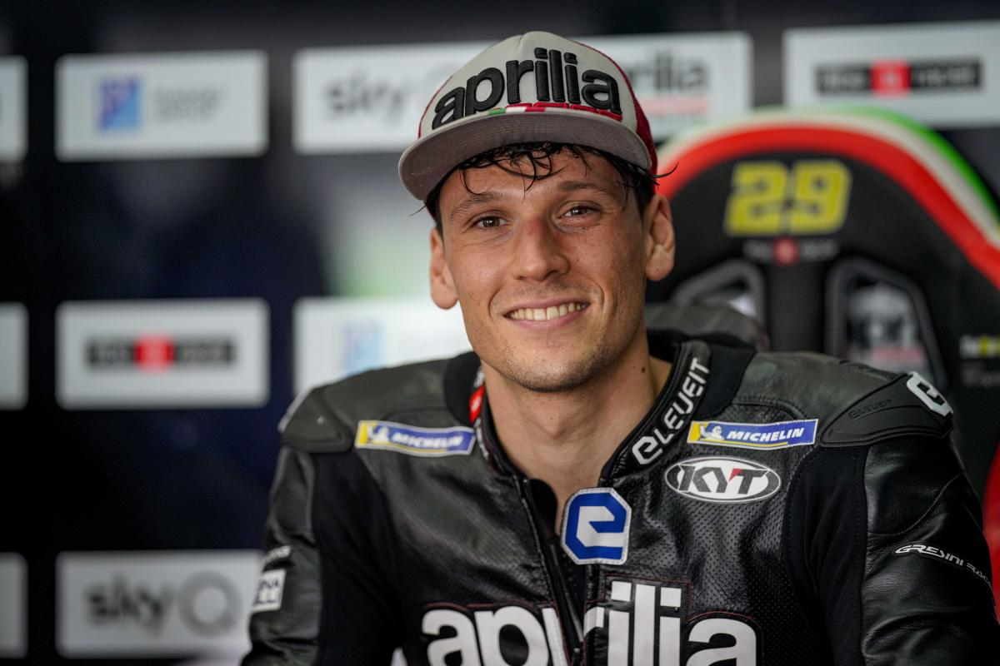

Piloten
ALEIX ESPARGARÓ - #41
Aleix Espargaró wurde am 30. Juli 1989 in Granollers in Spanien geboren und war 2004 spanischer Meister in der 125er-Klasse. Nach einer Reihe von Platzierungen ... mehr entdecken
MAVERICK VIÑALES #12
Maverick Viñales, geboren 1995, gab sein MotoGP-Debüt auf einer Aprilia... mehr entdecken
LORENZO SAVADORI #32
Lorenzo Savadori wurde 1993 in Cesena geboren und war 2008 mit Aprilia italienischer und europäischer Meister im 125er GP... mehr entdecken